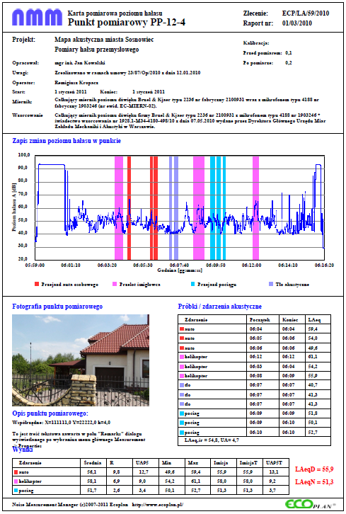
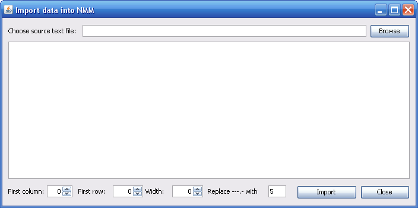
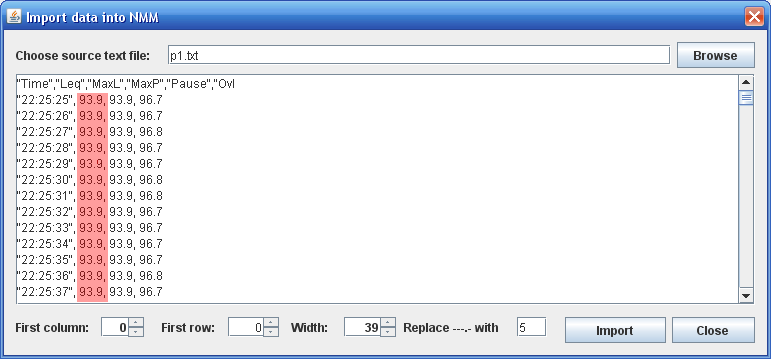
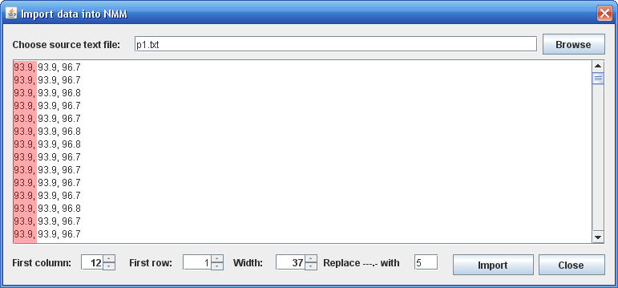
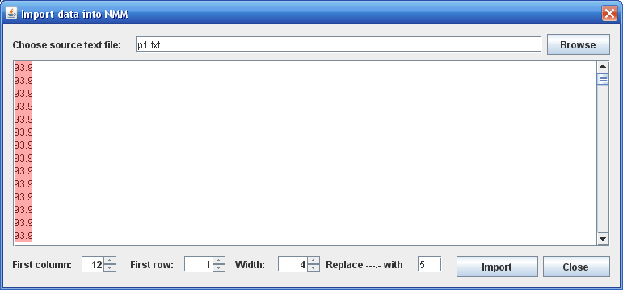
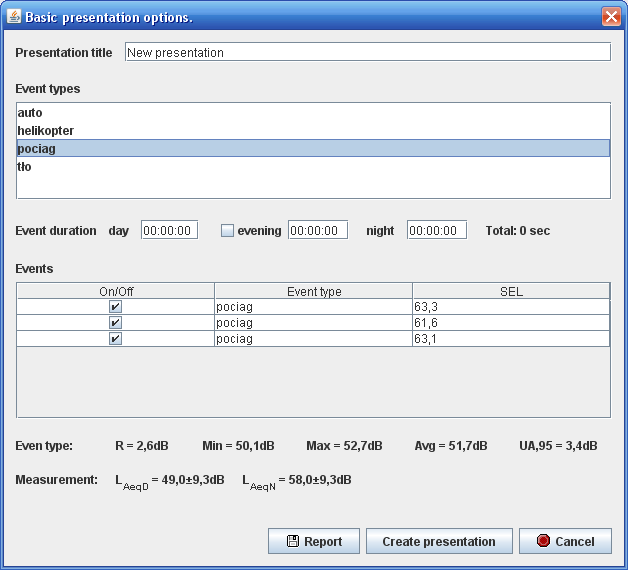

W tutorialu opisano sposób postępowania mający na celu utworzenie prezentacji danych, oraz wyników z pomiarów poziomu hałasu od źródeł stacjonarnych, przeprowadzonego metodą referencyjną próbkowaniem.
Pomiary przeprowadzone zostały w dwóch punktach pomiarowych znajdujcych się na terenie dla którego określone są dopuszczalne poziomy hałasu w środowisku.
W pierwszym punkcie pomiarowym (oznaczonum jako PP-1) zarejestrowano zmiany poziomu dźwięku z wykorzystaniem miernika poziomu dźwięku o numerze EC-MIER-01. Następnie analogiczne pomiary przeprowadzono w punkcie PP-2. W pierwszym punkcie pomiarowym zarejestrowano zmiany poziomu hałasu charakterystyczne dla trzech trybów pracy zakładu, natomiast w punkcie PP-2 dla dwóch trybów pracy zakładu.
Celem pracy jest stworzenie prezentacji zawierającej zarówno wykresy "surowych" danych, jak też wyniki analizy danych i wyniki pomiaru w każdym z punktów. Ostateczny produkt powinien wyglądać w przybliżeniu tak, jak to przedstawiono na poniższym rysunku. Rysunek przedstawia prezentację zawierającą podstawowe dane charakteryzujące pomiar, przebig pomiaru z oznaczeniem oszczególnych zdarzeń akustycznych, fotografię punktu pomiarowego wraz z współrzędnym i opisem tekstowym lokalizacji, tabelę z charakterystyką zdarzeń, oraz tabelę z wynikami obliczeń na poszczególnych tapach, oraz wyniki końcowe pomiaru.
Przykładowe dane do wykorzystania można pobrać z serwera WWW pod adresem http://www.ekoprojekt.opole.pl/nmm/tutorial1/dane_tutrial_1.zip
W archiwum zip znajdują się dwa pliki (p1.txt i p2.txt) zawierające zapis zmian poziomu dźwięku w odpowiednich punktach pomiarowych. Pliki należy wypakować z archiwum i umieścić w dowolnym miejscu na dysku twardym komputera.
Pracę z programem można ułatwić sobie ustawiając domyślną ścieżkę przechowywania plików projektu. W tym celu należy wybrać kolejno z menu "Project" -> "Setup". Wyświetlone zostanie okno dialogowe pozwalające wprowadzć ścieżkę dostępu do pliku projektu. [więcej...]
Pierwszą czynnością jaką należy wykonać jest import danych z pliku tekstoweg do programu NMM. W tym celu należy należy kolejno wybrać "Measurement" -> "Import". Wyświetlone zostanie przedstawione poniżej okno dialogowe.
Przyciśnięcie "Browse" oworzy typowe okno wyboru pliku. Należy wybrać plik p1.txt i potwierdzić wybór. Treść pliku zostanie wyświetona w oknie dialogowym. Korzystajac z pokręteł "First column", "First row", "Width" należy ustawić parametry importu pliku tekstowego.
Kolorem czerwonym na rysunkach oznaczono kolumnę zawierającą dane (w tym przypadku ekwiwalentny poziom dźwięku z okresu 1 sekundy). Na kolejnych rysunkach pokazano widok okna po ustawieniu kolejno pola "First column" na 12, "First row" na 1, oraz "Width" na 4.
Ustawiając pole "First column" w niektórych przypadkach może okazać się konieczne
  Prezentacja zawiera zarówno surowe wyniki pozyskane w czasie pomiarów, jak też informacje wprowadzone do programu. W szczególności dane charakteryzujące poszczególne zdarzenia akustyczne, częstość i długośc ich występowania, itp. Tworzenie prezentacji składa się z etapów: opracowania koncepcyjnego modelu źródła hałasu, wygenrowane raportu do wykorzystaia przy pracowaniu sprawozdania (opcjonalnie), oraz wygenerowanie wydruku.
Opracowanie modelu źródła hałasu jest konieczne w celu określenia ostaecznych wyników pomiaru metodą próbkowaia. Zakład produkcyjny może pracować w sposób jednostajny w czasie i generować hałas o poziomie ustalonym. Hałas nie zmienia się i w dowolnej chwili zarejestrowanie np. 60-sekundowych próek da podobną wartość. W wielu przypadkach przemysłowe źródło hałasu będzie generować hałas w różny sposób. Na przyład funkcjonowanie fermy kur może wiązać się z pracą zasadniczego systemu wentylacyjnego, okresową pracą system wentylatorów o dużj wydajności, oraz okresowym przerzutem paszy z wykorzystaniem transportu pneumatycznego. W dowolnym punkcie pomiarowym moża zatem zmierzyć jaki poziom hałasu występuje kiedy mają miecje wymienione powyżej sytuacje. Dodatkowo w oparcu o dane zgromadzone w terenie wiemy jak długo w okrsie odniesienia trwają wyienione stany klimatu akustyczneg. Dane te stanowią model źródła hałasu, który pozwoli obliczyć dla każdego z punktów poiarowych ekwiwalentny poziom halasu, oraz niepewność pomiaru.
W naszym przypadku przyjmiemy, że
Utworzona presentacja może być wydrukowana na drukarkę, bądź do pliku PDF. W wielu przypadkach koniczne jest jednakże dodatkowe tworzenie opisu pomiaru w formie raportu. Z tego względu wartości uzykane na poszczególnych etapach nalizy zapisu zmian poziomu hałasu można zapisać do pliku tekstowego w formie raportu.